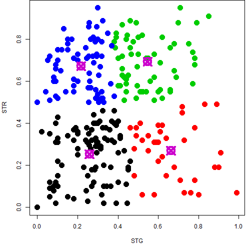
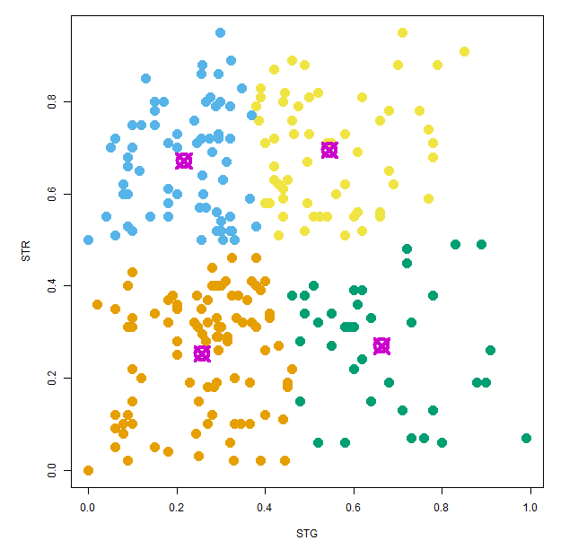
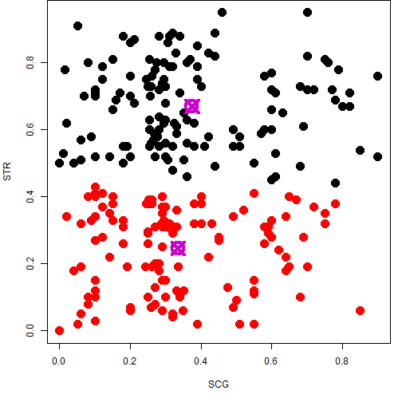

User Knowledge Modeling
Using K-means Clustering
https://eg7649.shinyapps.io/developingDataProducts
SEAN HUANG
What does it do?
- This simple app aims to provide a visual tool for showing result of k-means altorithm.
- You can assign two attributes from datasets as well as cluster number you prefer.
- Server will do the calculation based on the attributes and cluster number you choose, and show you the result on a 2-dimention plot.
User Knowledge Modeling Dataset?
It is the real dataset about the students' knowledge status about the subject of Electrical DC Machines. The dataset had been obtained from Ph.D. Thesis.
Attribute information
- STG: The degree of study time for goal object materails
- SCG: The degree of repetition number of user for goal object materails
- STR: The degree of study time of user for related objects with goal object
- LPR: The exam performance of user for related objects with goal object
- PEG: The exam performance of user for goal objects
- UNS: The knowledge level of user (output)
You can download the dataset here.
How does it work?
- User select two attributes and cluster number
- UI pass it to server as parameters for kmeans calculation
- Draw a coloful plot accroding to the result
- Return the plot to the page so user can see what it will be according to his choice
shinyServer(function(input, output, session) {
selectedData <- reactive({
data[, c(input$xcol, input$ycol)] }) # select data accroding to user input
clusters <- reactive({
kmeans(selectedData(), input$clusters) }) # do the calculation
output$plot1 <- renderPlot({ # print colorful result
par(mar = c(5.1, 4.1, 0, 1))
plot(selectedData(), col = clusters()$cluster, pch = 20, cex = 3)
points(clusters()$centers, pch = 13, cex = 3, lwd = 4, col = "#CC00CD") })
})
What will you see?
Choose STG vs. STR
4 cluster
selectedData <- data[, c(1,3)]
clusters <- kmeans(selectedData, 4)
par(mar = c(5.1, 4.1, 0, 1))
plot(selectedData, col = clusters$cluster, pch = 20, cex = 3)
points(clusters$centers, pch = 13, cex = 3, lwd = 4, col = "#CC00CD")


Choose SCG vs. STR
2 cluster
selectedData <- data[, 2:3]
clusters <- kmeans(selectedData, 2)
par(mar = c(5.1, 4.1, 0, 1))
plot(selectedData, col = clusters$cluster, pch = 20, cex = 3)
points(clusters$centers, pch = 13, cex = 3, lwd = 4, col = "#CC00CD")
